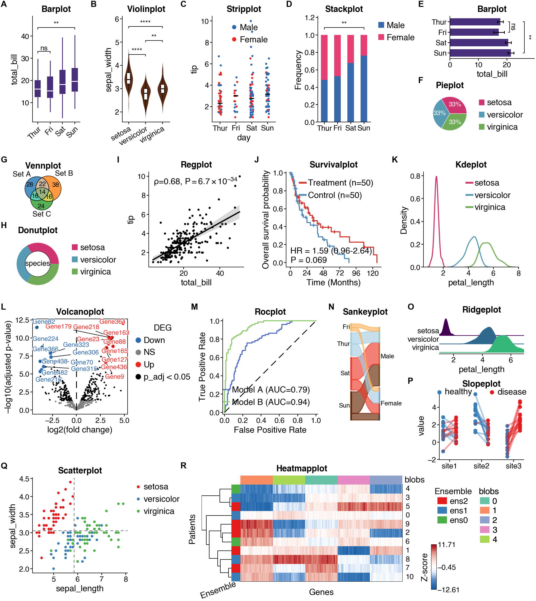
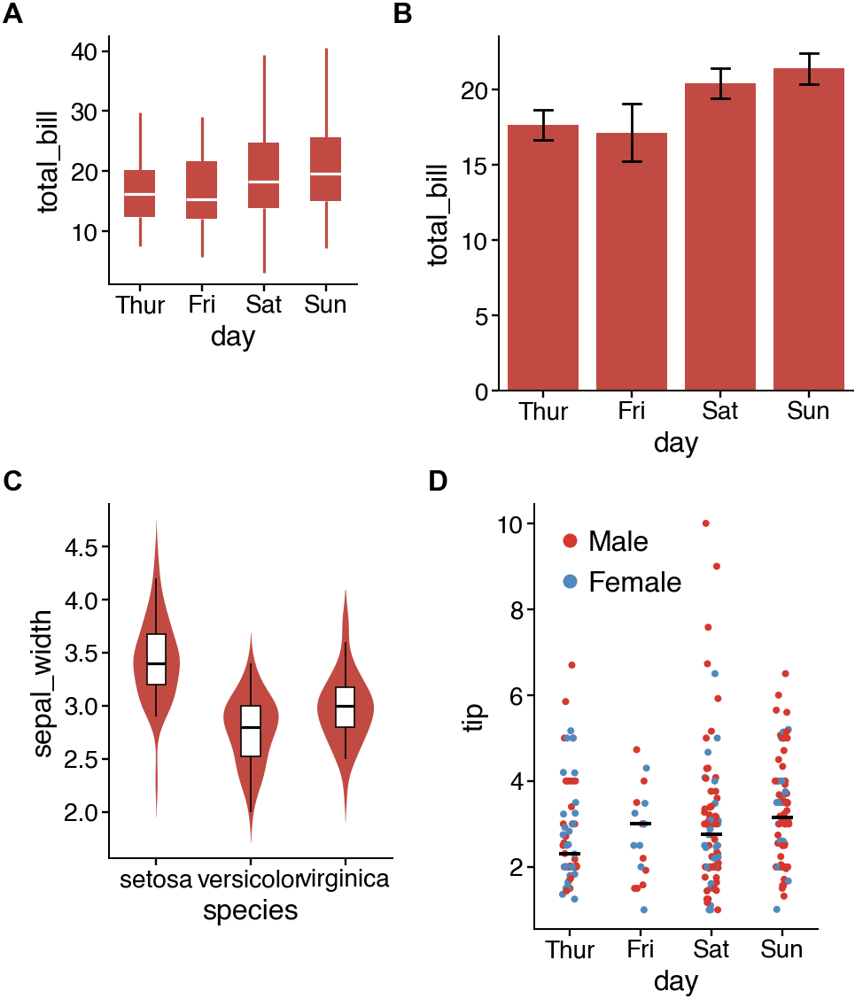
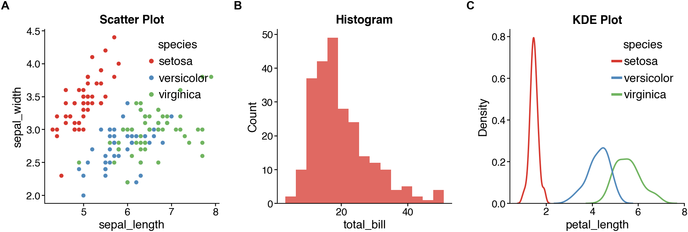
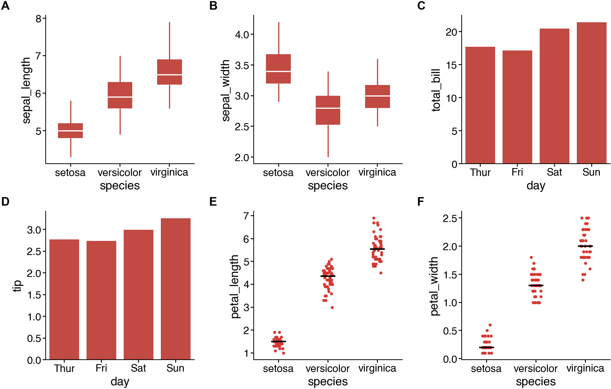
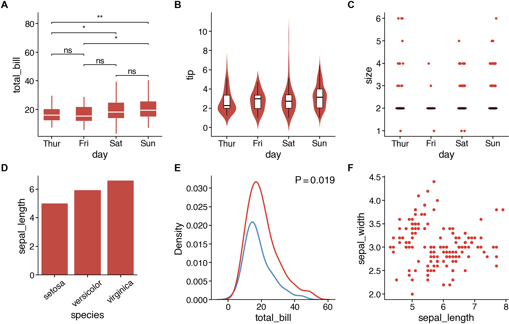
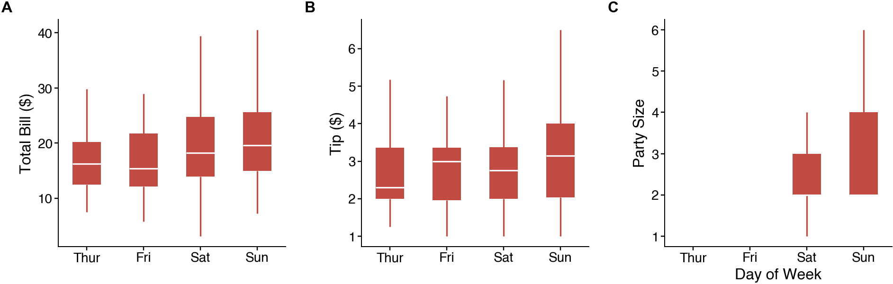
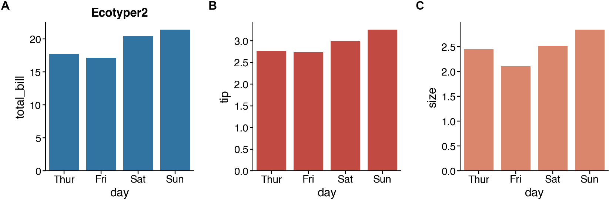

Note
Go to the end to download the full example code.
multipanel¶
Create multi-panel figures in Cell, Nature, Science journal style.
Multi-panel figures are essential for scientific publications. cnsplots provides automatic panel labeling (A, B, C…), flexible layouts, and precise control over figure dimensions in pixels.
Load data¶
import cnsplots as cns
iris_df, tips_df, survival_df, blobs, volcano_df, gene_sets, roc_df, slope_df = (
cns.get_showcase_data()
)
README Showcase figure¶
A comprehensive showcase of cnsplots capabilities for the README.
mp = cns.multipanel(max_width=540)
# Panel A: boxplot
mp.panel("A", 100, 45, pad_top=5, margin=(10, 0, 0, 30), color_cycle=[cns.VIOLET])
cns.boxplot(
data=tips_df, x="day", y="total_bill", pairs=[("Thur", "Sun"), ("Thur", "Fri")]
)
ax = mp.get_axes("A")
ax.set_title("Barplot")
ax.set_xlabel("")
ax.set_xticklabels(
ax.get_xticklabels(), rotation=45, ha="right", rotation_mode="anchor"
)
# Panel B: violinplot
mp.panel("B", 100, 45, pad_top=5, color_cycle=[cns.CHOCOLATE])
cns.violinplot(data=iris_df, x="species", y="sepal_width", pairs="all")
ax = mp.get_axes("B")
ax.set_title("Violinplot")
ax.set_xlabel("")
ax.set_xticklabels(
ax.get_xticklabels(), rotation=30, ha="right", rotation_mode="anchor"
)
# Panel C: stripplot
mp.panel("C", 100, 60, pad_top=5, color_cycle="BlueRed")
cns.stripplot(data=tips_df, x="day", y="tip", hue="sex")
mp.get_axes("C").set_title("Stripplot")
# Panel D: stackplot
mp.panel(
"D",
100,
50,
pad_top=5,
margin=(10, 0, 35, 20),
color_cycle=cns.get_hexcolors_from_apalette([2, 4], "Bold"),
)
cns.stackplot(data=tips_df, x="day", y="sex", pairs=[("Thur", "Sun")])
mp.get_axes("D").set_title("Stackplot")
mp.get_axes("D").get_legend().set_title(None)
# Panel E: barplot
mp.panel("E", 40, 80, pad_top=5, margin=(10, 0, 0, 15), color_cycle=[cns.VIOLET])
cns.barplot(
data=tips_df,
y="day",
x="total_bill",
errorbar="se",
width=0.7,
pairs=[("Thur", "Sun"), ("Thur", "Fri")],
)
mp.get_axes("E").set_title("Barplot")
mp.get_axes("E").set_ylabel("")
# Panel F: pieplot (stacked below E)
mp.panel(
"F",
40,
40,
pad_top=5,
margin=(0, 0, 0, 0),
pad_left=0,
below="E",
color_cycle="Ecotyper3",
)
cns.pieplot(iris_df, "species", legend="right")
mp.get_axes("F").set_title("Pieplot")
mp.get_axes("F").get_legend().set_title(None)
# Panel G: vennplot
mp.panel(
"G", 40, 40, pad_top=5, margin=(10, 0, 40, 5), pad_left=10, color_cycle="Tableau"
)
cns.vennplot(gene_sets, labels=("Set A", "Set B", "Set C"))
mp.get_axes("G").set_title("Vennplot")
# Panel H: donutplot
mp.panel(
"H",
50,
50,
pad_top=5,
margin=(0, 0, 0, 10),
pad_left=0,
below="G",
color_cycle="Ecotyper3",
)
cns.donutplot(iris_df, "species", legend="right")
mp.get_axes("H").set_title("Donutplot")
mp.get_axes("H").get_legend().set_title(None)
# Panel I: regplot
mp.panel("I", 90, 90, pad_top=5)
cns.regplot(data=tips_df, x="total_bill", y="tip", s=1)
mp.get_axes("I").set_title("Regplot")
# Panel J: survivalplot
mp.panel("J", 90, 90, pad_top=5)
cns.survivalplot(data=survival_df, duration="time", event="event", hue="group")
mp.get_axes("J").set_title("Survivalplot")
# Panel K: kdeplot
mp.panel("K", 90, 90, pad_top=5, color_cycle="Ecotyper3")
cns.kdeplot(data=iris_df, x="petal_length", hue="species")
mp.get_axes("K").get_legend().set_title(None)
mp.get_axes("K").set_title("Kdeplot")
# Panel L: volcanoplot
mp.panel("L", 90, 90, pad_top=5, margin=(10, 0, 50, 0))
cns.volcanoplot(volcano_df)
mp.get_axes("L").set_title("Volcanoplot")
# Panel M: rocplot
mp.panel("M", 90, 90, pad_top=5, color_cycle="ECharts")
cns.rocplot(roc_df, "label", ["Model A", "Model B"])
mp.get_axes("M").legend(loc="lower right")
mp.get_axes("M").set_title("Rocplot")
# Panel N: sankeyplot
mp.panel(
"N", 100, 30, pad_top=5, pad_left=10, margin=(10, 0, 15, 0), color_cycle="Ecotyper4"
)
cns.sankeyplot(tips_df, x="day", y="sex")
mp.get_axes("N").set_title("Sankeyplot")
# Panel O: ridgeplot
mp.panel("O", 35, 80, pad_top=3)
cns.ridgeplot(data=iris_df, x="petal_length", y="species")
mp.get_axes("O").set_title("Ridgeplot")
# Panel P: slopeplot
mp.panel("P", 65, 80, pad_top=3, margin=(0, 0, 0, 0), below="O")
cns.slopeplot(data=slope_df, x="site", y="value", hue="label")
mp.get_axes("P").set_title("Slopeplot")
# Panel Q: scatterplot
mp.newline()
mp.panel("Q", 90, 90, pad_top=5, margin=(10, 0, 40, 0), color_cycle="Set1")
cns.scatterplot(data=iris_df, x="sepal_length", y="sepal_width", hue="species", s=5)
ax = mp.get_axes("Q")
ax.set_title("Scatterplot")
ax.get_legend().set_title(None)
ax.axhline(
y=iris_df["sepal_width"].mean(),
color="gray",
linestyle="--",
dashes=(4, 3),
linewidth=0.7,
)
ax.axvline(
x=iris_df["sepal_length"].mean(),
color="gray",
linestyle="--",
dashes=(4, 3),
linewidth=0.7,
)
cns.take_legend_out()
# Panel R: heatmapplot
mp.panel("R", 100, 190, pad_top=3, pad_left=10)
cmp = cns.heatmapplot(
blobs,
label="Z-score",
cmap="BuRd_custom",
row_annotation=["Ensemble"],
col_annotation=["blobs"],
row_cluster=True,
col_cluster=True,
show_rownames=True,
show_colnames=False,
row_dendrogram=True,
xlabel="Genes",
ylabel="Patients",
xticklabels_rotation=20,
)
cmp.ax.set_title("Heatmapplot")
# cns.savefig("~/Desktop/final.svg")

Boxplots represent the median and bottom and upper quartiles; whiskers correspond to the 1.5 times the interquartile range.
---> P-values were determined by two-sided Mann-Whitney U test.
---> P-values were determined by two-sided Mann-Whitney U test.
---> P-values were determined by two-sided Fisher's exact test.
---> P-values were determined by two-sided Welch's t-test.
---> P-value was determined by two-sided multivariate log-rank test.
Incresing ncol
Incresing ncol
More than 3 cols is not supported
Legend too long, generating a new column..
Text(0.5, 1.0, 'Heatmapplot')
Basic 2x2 multi-panel figure¶
Create a simple grid layout with different panel sizes.
Each panel has explicit size: mp.panel(label, height, width).
Labels (A, B, C, D) are automatically added in bold, 8pt font.
mp = cns.multipanel(max_width=350)
mp.panel("A", 70, 70)
cns.boxplot(data=tips_df, x="day", y="total_bill")
mp.panel("B", 100, 100)
cns.barplot(data=tips_df, x="day", y="total_bill", errorbar="se")
mp.panel("C", 100, 80)
cns.violinplot(data=iris_df, x="species", y="sepal_width")
mp.panel("D", 120, 80)
cns.stripplot(data=tips_df, x="day", y="tip", hue="sex")

Boxplots represent the median and bottom and upper quartiles; whiskers correspond to the 1.5 times the interquartile range.
<Axes: xlabel='day', ylabel='tip'>
1x3 horizontal layout with titles¶
Create a row of panels, useful for comparing related analyses.
mp = cns.multipanel(max_width=540)
mp.panel("A", 120, 120, pad_top=10)
cns.scatterplot(data=iris_df, x="sepal_length", y="sepal_width", hue="species")
mp.get_axes("A").set_title("Scatter Plot")
mp.panel("B", 120, 120, pad_top=10)
cns.histplot(data=tips_df, x="total_bill", bins=15)
mp.get_axes("B").set_title("Histogram")
mp.panel("C", 120, 120, pad_top=10)
cns.kdeplot(data=iris_df, x="petal_length", hue="species")
mp.get_axes("C").set_title("KDE Plot")

Text(0.5, 1.0, 'KDE Plot')
3x2 grid with uniform panel sizes¶
Consistent panel sizes for organized appearance.
mp = cns.multipanel(max_width=500)
mp.panel("A", 100, 100)
cns.boxplot(data=iris_df, x="species", y="sepal_length")
mp.panel("B", 100, 100)
cns.boxplot(data=iris_df, x="species", y="sepal_width")
mp.panel("C", 100, 100)
cns.barplot(data=tips_df, x="day", y="total_bill")
mp.panel("D", 100, 100)
cns.barplot(data=tips_df, x="day", y="tip")
mp.panel("E", 100, 100)
cns.stripplot(data=iris_df, x="species", y="petal_length")
mp.panel("F", 100, 100)
cns.stripplot(data=iris_df, x="species", y="petal_width")

Boxplots represent the median and bottom and upper quartiles; whiskers correspond to the 1.5 times the interquartile range.
Boxplots represent the median and bottom and upper quartiles; whiskers correspond to the 1.5 times the interquartile range.
<Axes: xlabel='species', ylabel='petal_width'>
2x3 layout with varying panel sizes¶
Different panel sizes for different plot types.
mp = cns.multipanel(max_width=500)
mp.panel("A", 100, 100)
cns.boxplot(data=tips_df, x="day", y="total_bill", pairs="all")
mp.panel("B", 100, 100)
cns.violinplot(data=tips_df, x="day", y="tip")
mp.panel("C", 100, 100)
cns.stripplot(data=tips_df, x="day", y="size")
mp.panel("D", 80, 80, margin=(10, 0, 20, 20))
cns.barplot(data=iris_df, x="species", y="sepal_length")
mp.get_axes("D").tick_params(axis="x", rotation=40)
mp.panel("E", 100, 100)
cns.kdeplot(data=tips_df, x="total_bill", hue="sex")
mp.get_axes("E").legend().remove()
mp.panel("F", 100, 100)
cns.scatterplot(data=iris_df, x="sepal_length", y="sepal_width", s=5)

Boxplots represent the median and bottom and upper quartiles; whiskers correspond to the 1.5 times the interquartile range.
---> P-values were determined by two-sided Mann-Whitney U test.
---> P-value was determined by Anderson-Darling test.
<Axes: xlabel='sepal_length', ylabel='sepal_width'>
Using get_axes() for customization¶
Access individual axes for further customization.
mp = cns.multipanel(max_width=500)
mp.panel("A", 120, 120)
cns.boxplot(data=tips_df, x="day", y="total_bill")
ax_a = mp.get_axes("A")
ax_a.set_ylabel("Total Bill ($)")
ax_a.set_xlabel("")
mp.panel("B", 120, 120)
cns.boxplot(data=tips_df, x="day", y="tip")
ax_b = mp.get_axes("B")
ax_b.set_ylabel("Tip ($)")
ax_b.set_xlabel("")
mp.panel("C", 120, 120)
cns.boxplot(data=tips_df, x="day", y="size")
ax_c = mp.get_axes("C")
ax_c.set_ylabel("Party Size")
ax_c.set_xlabel("Day of Week")

Boxplots represent the median and bottom and upper quartiles; whiskers correspond to the 1.5 times the interquartile range.
Boxplots represent the median and bottom and upper quartiles; whiskers correspond to the 1.5 times the interquartile range.
Boxplots represent the median and bottom and upper quartiles; whiskers correspond to the 1.5 times the interquartile range.
Text(0.5, 32.879999999999995, 'Day of Week')
Using custom color palettes¶
Apply different palettes to the multi-panel figure.
mp = cns.multipanel(max_width=480)
mp.panel("A", 100, 100, pad_top=5, color_cycle="Tableau")
cns.barplot(data=tips_df, x="day", y="total_bill")
mp.get_axes("A").set_title("Tableau")
mp.panel("B", 100, 100, pad_top=5, color_cycle="Ecotyper1")
cns.barplot(data=tips_df, x="day", y="tip")
mp.get_axes("A").set_title("Ecotyper1")
mp.panel("C", 100, 100, pad_top=5, color_cycle="Ecotyper2")
cns.barplot(data=tips_df, x="day", y="size")
mp.get_axes("A").set_title("Ecotyper2")

Text(0.5, 1.0, 'Ecotyper2')
Total running time of the script: (0 minutes 5.340 seconds)